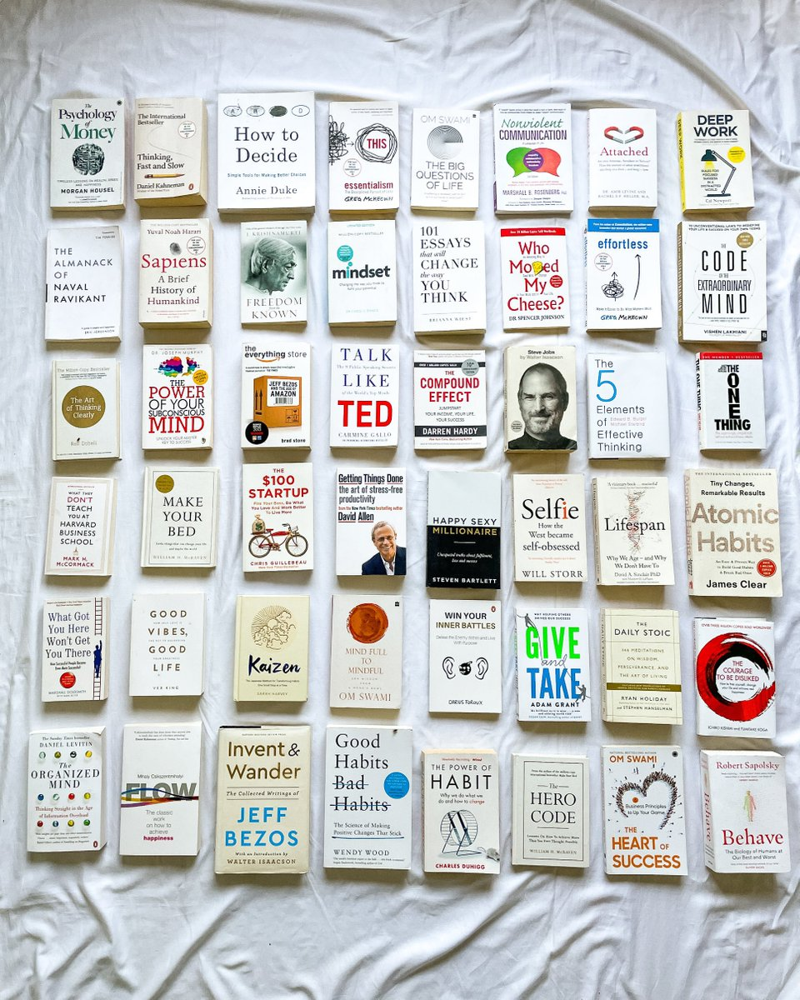
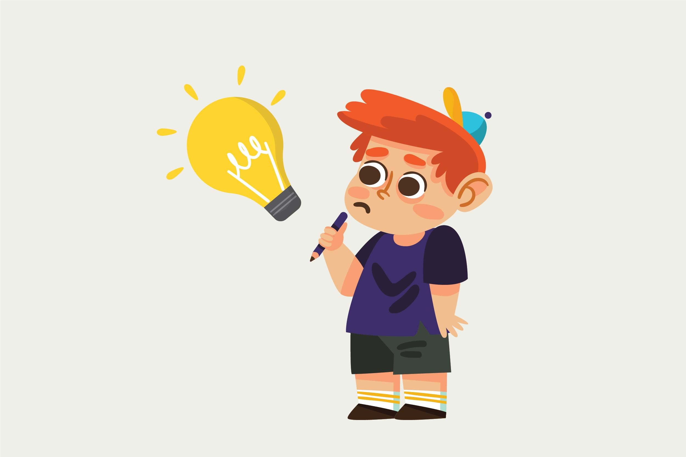

Berpikir out of the box adalah cara berpikir di luar batasan atau menggunakan perspektif yang baru. Tujuan berpikir out of the box ialah agar ide yang kita hasilkan berbeda, keluar dari pakem orang kebanyakan.
Dalam dunia bisnis, tentu sangat penting agar produk/jasa/strategi yang dilakukan menarik perhatian, mudah diingat, dan menciptakan samudra biru, yaitu kondisi tanpa pesaing menjadi tidak lagi relevan.
Bagaimana caranya agar kita dapat berpikir out of the box? Berikut beberapa caranya:
- Banyak Baca Buku yang Berbeda Topik
- Luangkan Waktu 1 Jam Setiap Hari Untuk Menyendiri dan Rileks
- Lakukan Hal Baru Setiap Hari Walaupun Hal Kecil Sekalipun
- Mengunjungi Tempat Baru
- Bergabung Dengan Circle Orang-orang Kreatif
- Berpikir Kritis
- Menggunakan Design Thinking Sebagai Metode Problem Solving
1. Banyak Baca Buku yang Berbeda Topik

Semakin banyak membaca buku, membuat pengetahuan dan wawasan kita menjadi luas. Buku dengan topik berbeda membuat otak kita mempunyai banyak perspektif dalam melihat sesuatu.
Banyak pengetahuan dan banyak perspektif inilah yang akan menjadi bahan baku utama Anda mampu berpikir out of the box.
Berikut beberapa rekomendasi buku bertemakan self development:
- The Psychology of Money
- Thinking Fast & Slow
- How To Decide
- Essentialism
- The Big Questions of Life
- Nonviolent Communication
- Attached
- Deep Work
- The Almanack of Naval Ravikant
- Sapiens
- Freedom From The Known
- Mindset
2. Luangkan Waktu 1 Jam Setiap Hari Untuk Menyendiri dan Rileks
Untuk meningkatkan kemampuan berpikir out of the box, otak perlu beristirahat. Luangkan waktu 1 jam sehari untuk benar-benar rileks dan tanpa memikirkan beban apapun.
Pastikan kamu juga perlu mengkondisikan lingkungan yang jauh dari kebisingan. Biasanya waktu yang tepat untuk melakukannya ialah pada dini hari sekitar pukul 02.00 sampai 04.00.
Lakukan secara rutin dan rasakan tingkat kecerdasan yang meningkat setiap hari.
3. Lakukan Hal Baru Setiap Hari Walaupun Hal Kecil Sekalipun

Melakukan hal kecil yang berbeda setiap ahri sangat membantumu untuk melatih berpikir kreatif. Berpikir kreatif adalah level pertama yang harus kamu kuasai sebelum mampu berpikir out of the box.
4. Mengunjungi Tempat Baru
Semakin banyak tempat baru yang kamu kunjungi, akan membuat pengalaman baru dan pengetahuan baru. Niatkan bukan hanya untuk berlibur, tetapi yang penting adalah mempelajari budaya, karakter orang, dan cara berpikir yang berbeda.
5. Bergabung Dengan Circle Orang-orang Kreatif
Seperti apa dirimu adalah cerminan dari 10 orang terdekatmu. Oleh karena itu, kondisikan orang-orang yang terbiasa berpikir kreatif dan out of the box sebagai orang-orang terdekatmu.
6. Berpikir Kritis

Berpikir kritis akan membantu kita untuk berpikir secara mendalam dan fundamental. Kita akan terbiasa mempertanyakan banyak hal. Kritis adalah gerbang pengetahuan.
7. Menggunakan Design Thinking Sebagai Metode Problem Solving

Design thinking adalah metode atau pendekatan yang digunakan untuk pemecahan masalah secara praktis dan kreatif dengan fokus utama pada users atau pengguna.
Metode ini sangat efektif untuk melatihmu berpikir out of the box secara berkelompok.